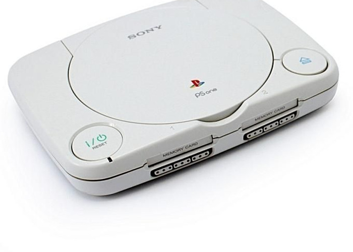

La PlayStation fue lanzada a la venta el 3 de diciembre de 1994 en Japón, el 9 de septiembre de 1995 en EE. UU. y el 29 de septiembre de 1995 en Europa. Todo empezó con un contrato roto con Nintendo a finales de la década de 1980. Nintendo acordó con Sony, a finales de los 80, desarrollar para su exitosa Super Nintendo un apéndice para incorporar juegos en disco, además del tradicional cartucho.5 La firma de videojuegos, sin embargo, rompió con la tecnológica japonesa, neófita entonces en la industria, porque consideró que cedió muchísimo en el control y beneficios derivados de la venta de juegos en CD. Ken Kutaragi, que en aquella época fue un ingeniero informático de Sony apasionado por los videojuegos, propuso una consola que combinó las capacidades gráficas de una estación de trabajo y la unidad de CD-ROM de Sony. Durante 2 años, Ken Kutaragi buscó sin éxito alguien en algún lugar del grupo audiovisual de Sony que respaldase su proyecto. Se trasladó, junto con su investigación, de un laboratorio a otro, hasta que Teruo Tokunaka le llevó a ver al entonces presidente Norio Ohga para exponer su idea. La cúpula de Sony, rehizo desde un principio a introducirse en el mercado de los videojuegos, intentó terminar la aventura aquí. Sin embargo, la obstinación de Kutaragi hizo que la compañía siga adelante. La empresa derivó el proyecto con Kutaragi a cargo a Sony Music para no responsabilizarse de las impredecibles consecuencias de la apuesta. La colaboración, a la postre, fue fundamental para la producción de discos. Hasta 1993, la compañía no tendría una sección propia de videojuegos, Sony Computer Entertaiment. Sony lanzó la PlayStation en el Japón el 3 de diciembre de 1994. El éxito fue inmediato. La clave estuvo en las facilidades ofrecidas por la compañía a los desarrolladores de videojuegos, entusiasmados con las grandes posibilidades técnicas, las tres dimensiones y el disco. Los desarrolladores tomaron varios riesgos económicos creando cartuchos para Sega o Nintendo; por el contrario, Sony ofreció todas las facilidades a fin de tener un catálogo variado de juegos. Enseguida se sumaron los grandes del sector. Títulos como Gran Turismo, Metal Gear o Final Fantasy son historia fundamental de los videojuegos. El salto a Europa y los Estados Unidos también fue exitoso. Sony optó rebajar el precio de su consola por debajo del costo. El lanzamiento en los Estados Unidos fue a un precio de 299 dólares, muy por debajo de los 399 de su principal enemigo, la Sega Saturn, barrida completamente. Al contrario de la tendencia de la industria, Sony intentó obtener beneficios derivados del software y no sólo del hardware. Y lo hizo: las ganancias de Sony Computer Entertaiment supusieron el 90% de la compañía. La primera versión de la PlayStation superó los 100 millones de unidades vendidas nueve años después de lanzarla
click aqui para ir a google Informacion adicional GitHub 